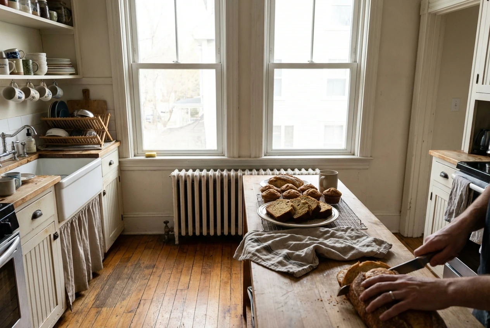
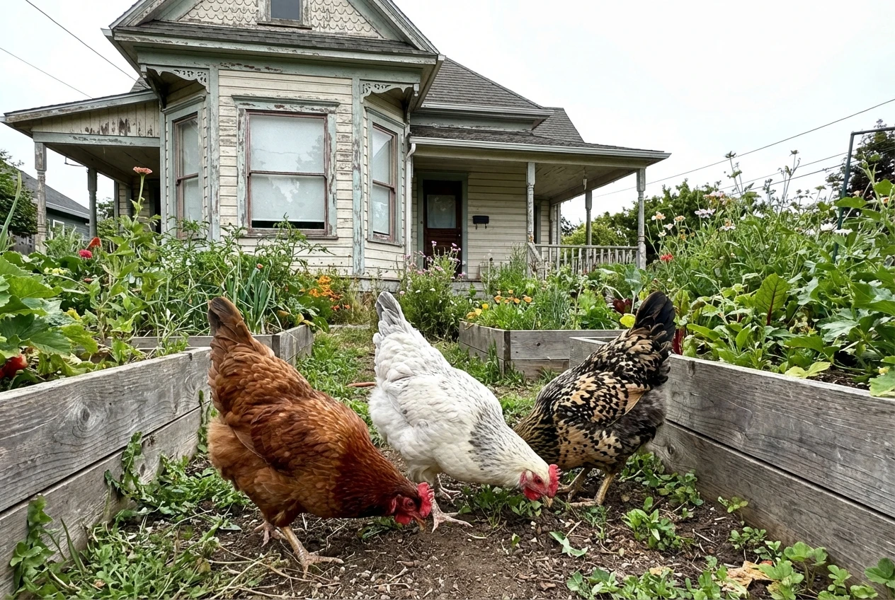
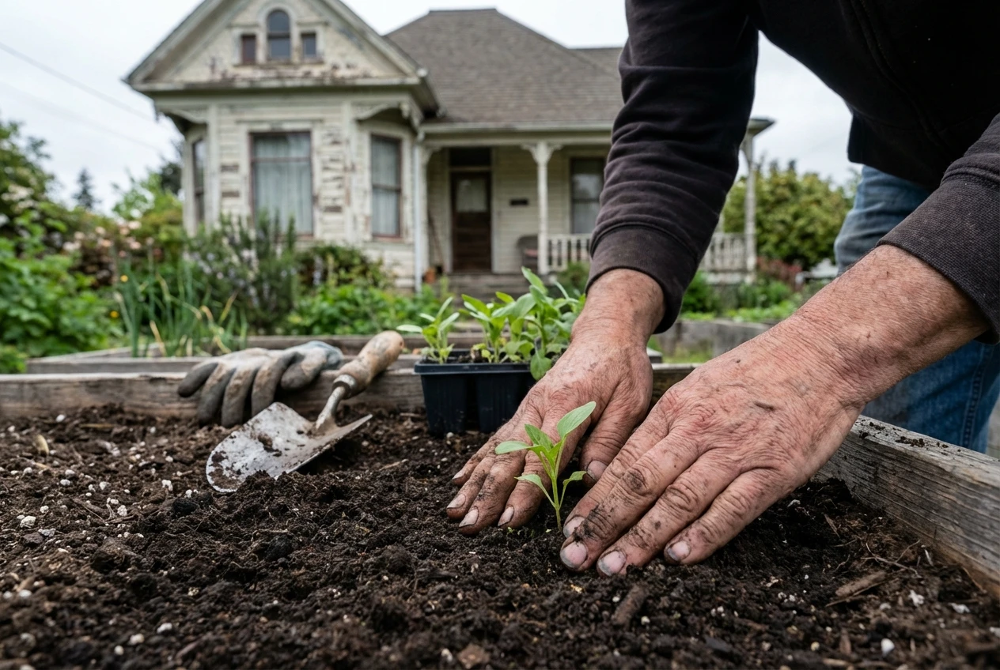

"I didn't know the word 'innkeeper' would apply to me," she laughs, pouring tea in the sunny kitchen of SILK Homes' Marietta property. "I just knew I wanted to create spaces where people could land softly."
At 34, Sarah brings an eclectic background to her new role. She's been a librarian, a farm apprentice, a hospice volunteer, and most recently, managed a food co-op in Columbus. The thread connecting it all? A passion for helping people find what they need, whether that's the right book, the ripest tomato, or a peaceful place to call home.
Finding Marietta
Sarah discovered SILK Homes while researching intentional communities online. "I was looking for co-housing situations, ecovillages, anything that wasn't conventional apartment living," she explains. "SILK wasn't exactly what I was searching for, but it turned out to be what I needed."

She visited Marietta in September, fell in love with the historic river town, and when the innkeeper position opened up, she knew it was meant to be. "Marietta has this quality—it's small enough to know your neighbors but cultured enough that there's an art scene, a college, actual bookstores. It's rare."
My job is to create conditions for connection, then get out of the way. People don't need orchestrated community—they need the space and permission to build it themselves.
The position of innkeeper at SILK Homes is part property manager, part community cultivator, part general problem-solver. Sarah maintains the physical property, screens potential residents, coordinates maintenance, and most importantly, helps foster the kind of intentional community that makes SILK different from ordinary rentals.
Homesteading Dreams
Sarah's personal passion is homesteading—not off-grid survivalism, but practical self-sufficiency skills integrated into modern life. "I want to know how to preserve food, mend clothes, keep chickens, grow vegetables. Not because I'm preparing for apocalypse, but because these skills connect me to life in tangible ways."

She's already planning expansion of the Marietta property's gardens, organizing a community canning workshop for next summer, and has introduced her chickens (Harriet, Louise, and Joan) to curious neighbors who'd never seen eggs that weren't store-bought.
"We've lost so much practical knowledge in just two generations," Sarah reflects. "My grandmother could preserve an entire summer's harvest. She made her own soap. She knew which wild plants were edible. I'm trying to relearn what she considered basic life skills."

Advertisement: SILK Homes
Hospitality as Practice
What makes Sarah particularly suited to innkeeping is her understanding of hospitality as spiritual practice. "Creating welcoming space for others is its own form of service," she says. "When someone's had a hard day and they come home to a space that feels cared for, that matters."

She's known for small gestures—fresh flowers in common spaces, a basket of garden tomatoes left with a note, remembering that someone mentioned needing to borrow a particular tool. It's the kind of attentiveness that makes a house feel like home.
Residents are already noticing. Marcus, who moved in two weeks after Sarah started, says: "There's a warmth here that wasn't in other places I looked at. You can feel that someone cares about the space and the people in it."
Hospitality isn't about perfect spaces or Instagram-worthy aesthetics. It's about making people feel seen and cared for. That's rare and precious.
Sarah's vision for the Marietta property is simple but profound: "I want this to be a place where people can explore who they're becoming without judgment. Where trying to live more intentionally is normal, not weird. Where community is available but not mandatory. Where home is both refuge and launching pad."
A New Chapter
What's remarkable about Sarah isn't that she has all the answers. It's that she's comfortable with the questions. She admits she's still learning the rhythm of innkeeping, still figuring out when to step in and when to step back, still discovering what intentional community needs from its steward.
"Some days I feel like I'm making it up as I go," she says with characteristic honesty. "Then I remember—that's actually what everyone's doing. The difference is just being intentional about which direction you're making it up in."
In the month since Sarah arrived, the Marietta property has started to feel different. It's subtle—fresh muffins appearing in the common kitchen, a note about the first frost reminding residents to bring in sensitive plants, a community calendar that somehow just materialized on the bulletin board. Small gestures that add up to something larger: the feeling that someone's paying attention.
And paying attention, Sarah would tell you, is ninety percent of good innkeeping. The other ten percent is knowing when to look away.
With her blend of practical skills, genuine warmth, and deep respect for both solitude and community, Sarah seems poised to make that vision real. Marietta is lucky to have her.


{kind=link}
Bill Henderson
10 Dec 2025Welcome to the valley, Sarah! We need more people like you—folks who understand that community isn't about events and activities, it's about paying attention. Those small gestures you mentioned? That's what builds real connection. Looking forward to meeting those chickens.
REPLYEmma Clarke
10 Dec 2025Sarah's description of hospitality as spiritual practice really resonates. We've gotten so far from the idea that creating welcoming space is sacred work. It's not about perfection or Instagram-worthy aesthetics—it's about making people feel seen and cared for. That's rare and precious.
REPLYRosa Delgado
10 Dec 2025The part about relearning practical skills really speaks to me. My abuela knew how to do everything—preserve food, make remedies, mend anything. I know how to order things on Amazon. Sarah's right that we've lost something important. Maybe we can help each other relearn it together.
REPLYSarah Mitchell
11 Dec 2025Thank you all for the warm welcome! Bill, you can meet Harriet, Louise, and Joan anytime—they're very social chickens. Rosa, I'd love to learn about your abuela's remedies. And Emma, yes—hospitality is about attention, not perfection. I'm excited to build this with all of you.
REPLYTom Richardson
11 Dec 2025Marietta's lucky to have you, Sarah. The idea of community being "available but not mandatory"—that's exactly right. Sometimes people need space, sometimes they need connection. Good innkeeping means knowing when to show up and when to step back. Sounds like you've got that figured out.
REPLY